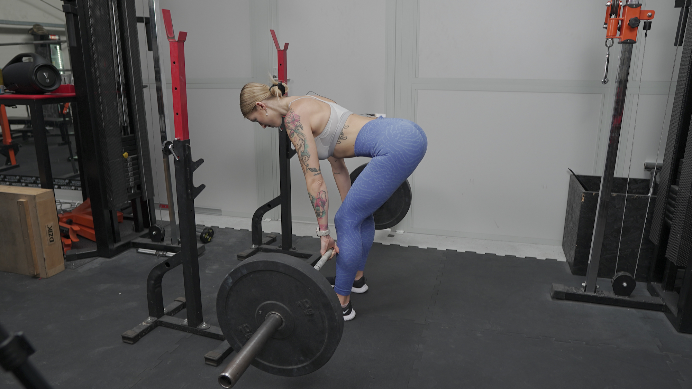
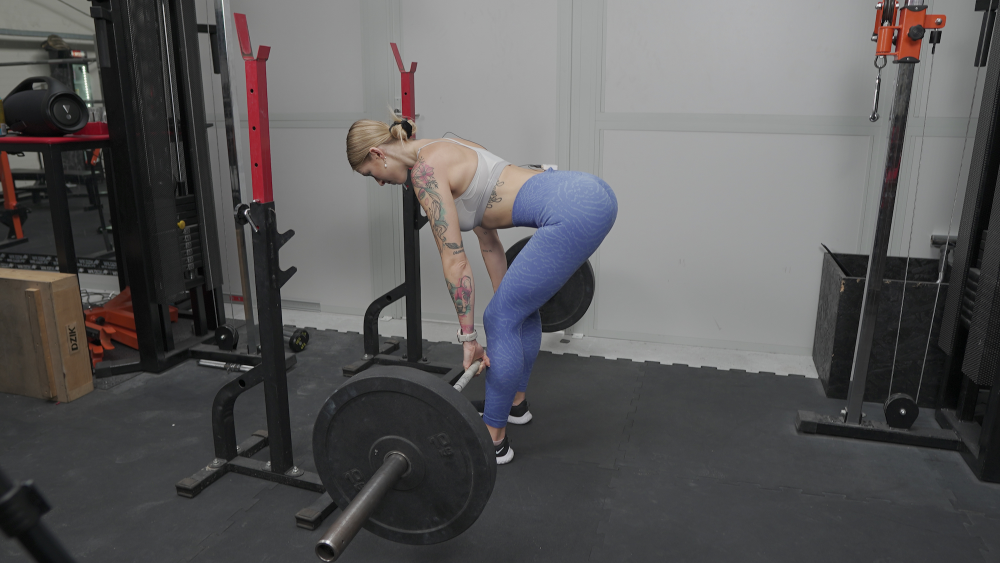

MARTWY CIĄG RUMUŃSKI
 

1. Ustaw sztangę na stojakach na takiej wysokości, abyś swobodnie mogła ją z nich ściągnąć (a więc mniej więcej na równi z Twoimi dłońmi opuszczonymi wzdłuż tułowia).
2. Złap sztangę nachwytem (od góry) mniej więcej na szerokość Twoich barków.
3. Ściągnij łopatki, zepnij brzuch i pociągnij sztangę “na siebie”, aby swobodnie zdjąć ją ze stojaków.
4. Wykonaj 2 małe kroki w tył.
5. Stopy ustaw na szerokość bioder lub delikatnie węziej, a palce skieruj przed siebie.
6. Ponownie skup się na spięciu brzucha, ściągnięciu łopatek, prostych plecach i napiętych pośladkach.
7. Pozostań na delikatnie ugiętych kolanach (nie mogą być całkowicie wyprostowane).
8. Głowa powinna stanowić przedłużenie tułowia.
9. Rozpocznij ruch wysuwania bioder maksymalnie w tył, sztangę prowadząc bardzo blisko nóg. Nie zmieniaj pozycji kolan (nie mogą się mocniej uginać).
10. Zakończ ruch w momencie, kiedy Twoje biodra są maksymalnie wypchnięte w tył. Nie odkładaj sztangi na ziemię, ani na stojaki. Nie staraj się zejść jak najniżej.
11. Powróć do pozycji pionowej, prowadząc sztangę po nogach, wykonując wyprost w stawie biodrowym.
12. Napnij pośladki w górnej fazie ruchu, ale nie wykonuj przeprostu.